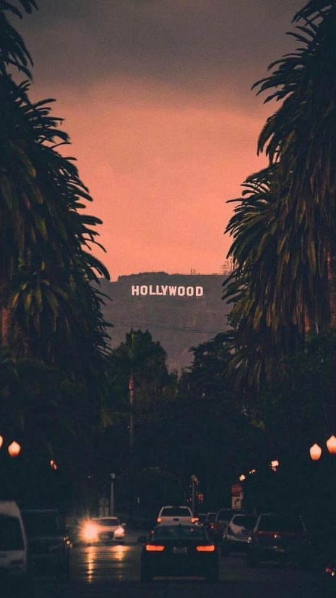

state on the West Coast of the United States, known for its beautiful
coastline, towering mountains, and pleasant weather. It's a popular
destination for outdoor activities and offers a range of experiences,
from wine tasting in Napa Valley to exploring unique places.
1. **Geographical Diversity:** California is known for its remarkable
geographical diversity, featuring everything from pristine beaches along
the Pacific coastline to towering mountain ranges like the Sierra Nevada
and the Cascade Range. It also encompasses vast deserts, fertile valleys.
2. **Golden State:** California is often called the "Golden State" due to
its historical association with the California Gold Rush of the mid-19th
century. This event played a pivotal role in shaping the state's identity.

3. **Entertainment Industry:** California, particularly Los Angeles,
is the epicenter of the entertainment industry. Hollywood, in Los
Angeles, is synonymous with filmmaking and home to numerous studios,
celebrities, and the iconic Hollywood Walk of Fame.
4. **Technology Hub:** Silicon Valley, located in the San Francisco Bay
Area, is a global technology and innovation hub. It's the birthplace of
many tech giants, including Apple, Google, Facebook, and Tesla.

5. **Natural Wonders:** The state boasts an array of natural wonders,
including the majestic Yosemite National Park, the scenic Big Sur
coastline, and the captivating Death Valley National Park, which
features the lowest point in North America.